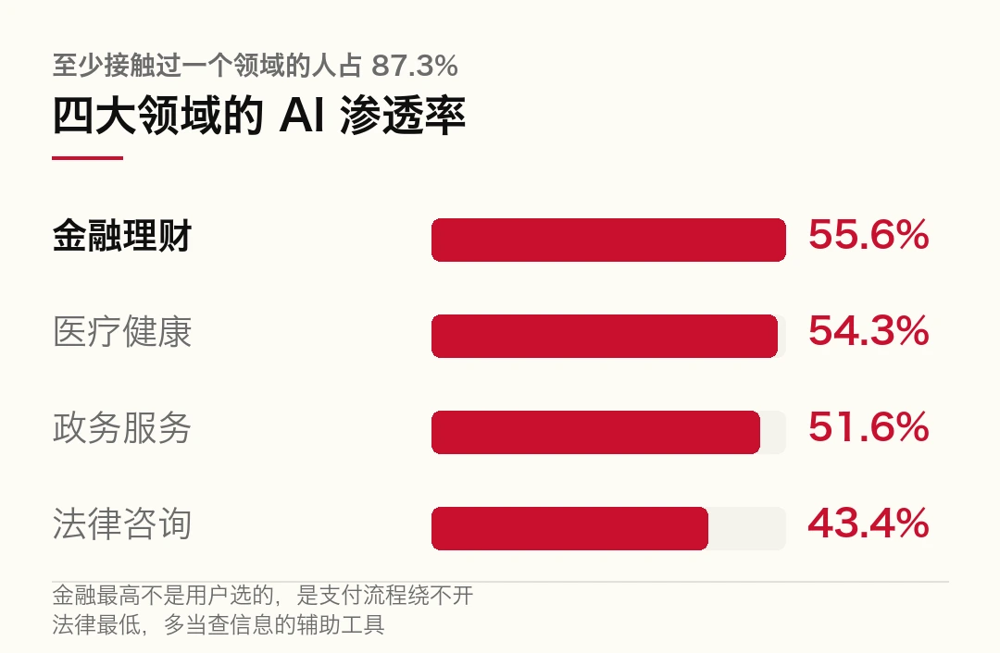
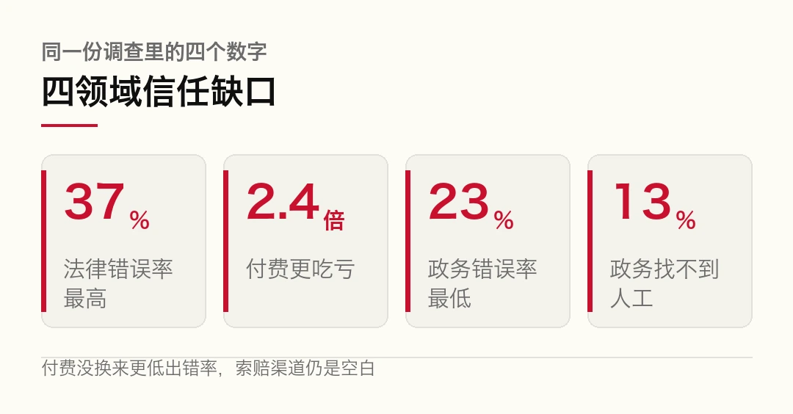
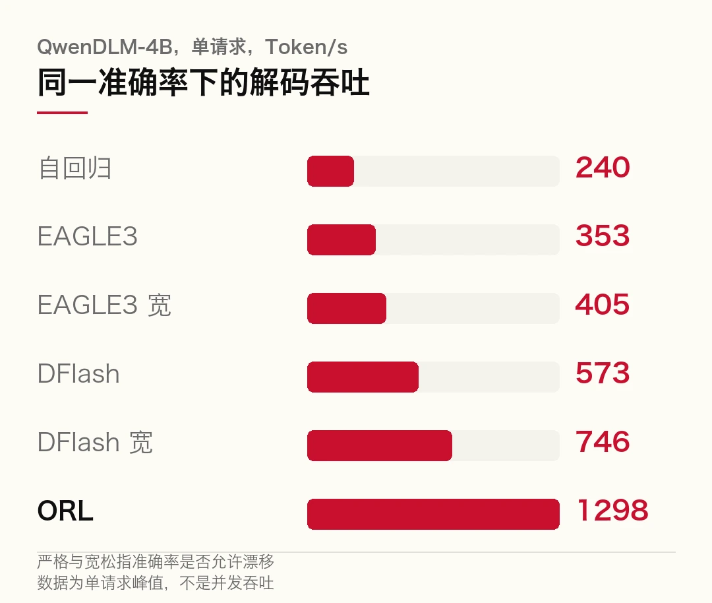
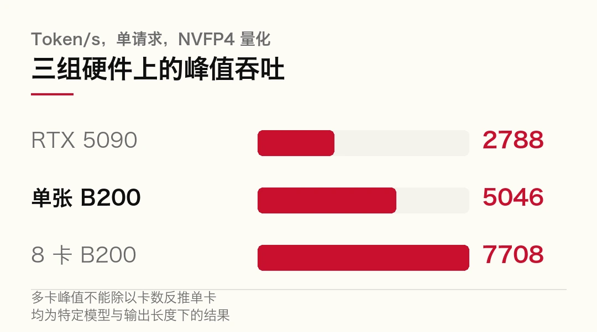
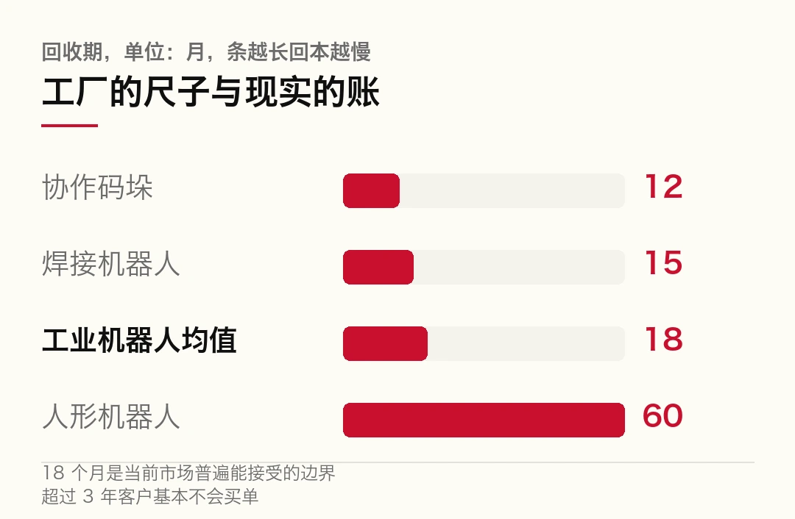
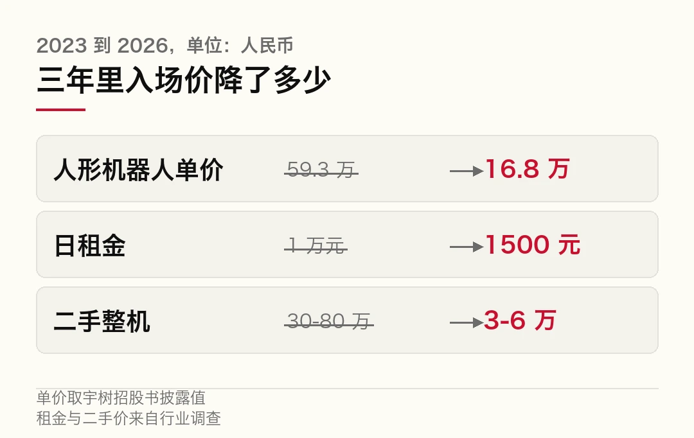
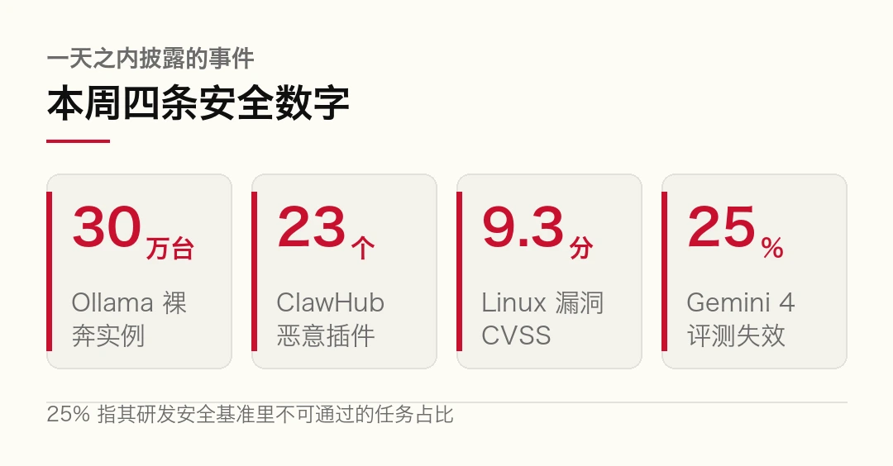
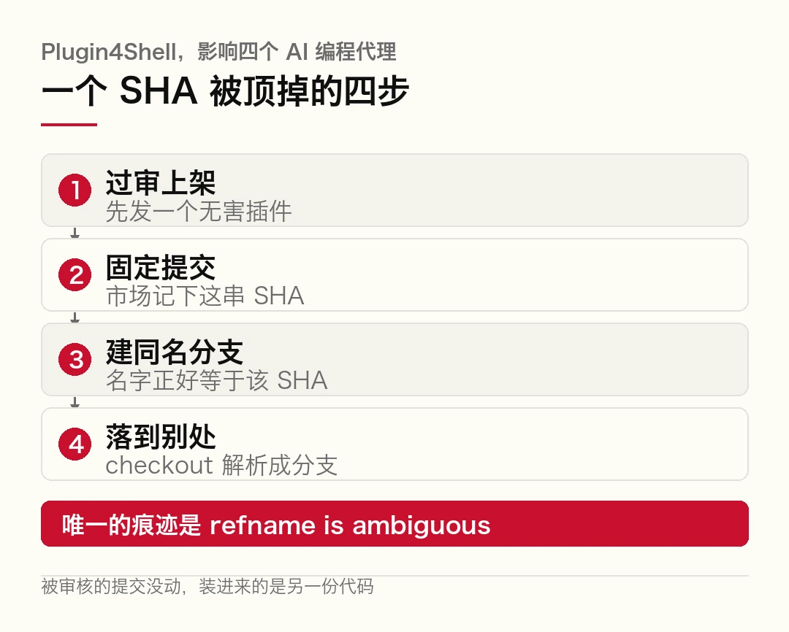

01认可 91.7%，信任 70 分，中间那道坎不是技术
10 月 15 日，上海市质协用户评价中心发了一份报告。
全名很长，《公众服务 AI 应用上海市消费者信任与体验调查报告》。数字比名字好看得多。
87.3% 的市民至少用过政务、医疗、金融、法律四个领域里的一个 AI 服务。91.7% 说它确实让办事和咨询更方便了。
然后，四个领域的信任度，全在 70 分上下。
同一份问卷，两个数字差 20 分。差的这一截，「敢不敢照它说的做」。
- 91.7% 认可便捷，四个领域的信任度却都在 70 分上下。认可和信任常被当成一件事，其实不是。
- 错误率跟专业门槛正相关。法律 37.0% 最高，政务 23.0% 最低。
- 最刺的一条，法律 AI 付费用户遇错造成损失的比例，是免费用户的 2.4 倍，而索赔渠道和赔偿规则都是空白。
让 AI 更聪明是算法问题。让人敢用另说，它是三个具体环节的问题。钱怎么收，错谁来改，人怎么找到。
一、先看一个顺的
先说报告里的正面细节，记者自己写的。
在「随申办」申请开无犯罪记录证明，过去要手动填证件信息，现在后台实时调取、自动预填。记者只点了「立即办理」和「确认」，十几秒提交完。
这不是小事。说真的，材料预填省下的不只是时间，还砍掉一类最常见的失败，填错、漏填、被退回重来。
同一份报告，同一个 App，翻一页就是另一幅样子。
记者想追问长护险怎么申办，AI 客服回了一句「人工客服繁忙，您当前排在第 45 位」。
没告诉要等多久。
换到「交管 12123」，同样要求转人工。AI 客服反复提示「工作人员将在 1 个工作日内回复」，页面上翻不到人工入口。
一个入口通畅、救济偏弱的评价，就是这么来的。
二、四种毛病，四个方向
把这四个领域的 AI 应用放到一张表里比。比出来的不是谁好谁坏，是四种完全不同的失效方式。
| 领域 | 渗透率 | 准确性 | 错误遭遇率 | 最痛的一环 ||---|---|---|---|---|| 金融理财 | 55.6% | 四领域垫底 | 超三成 | 只讲有利条件 || 医疗健康 | 54.3% | 四领域最高 | 未单列 | 隐私信任最低 || 政务服务 | 51.6% | 73.4 | 23.0% | 找不到人的入口 || 法律咨询 | 43.4% | 未单列 | 37.0% | 付费也没人担责 |
看渗透率那一列。金融排第一，55.6%。这个第一跟用户偏好关系不大，是流程逼出来的。支付、转账、人脸核验、异常交易提醒，这些全嵌在必须走完的步骤里，绕不开。
政务 51.6%，医疗 54.3%，都在一半上下。法律最低，43.4%。
用得最多的地方，信任不一定最高。金融是最清楚的反例。

金融 AI 的准确性评价在四个领域里垫底。约四分之一的使用者对 AI 推荐理财、保险产品的立场存疑。超三成遇到过错误结果，其中 4.6% 造成了实际经济损失。
报告里写了个具体的例子。
52 岁的王女士，在某 AI 理财助手平台输入「高领取终身养老险」。AI 推了一款年金险，加粗展示「月领 1 万元、终身领取、投入少回报高」。
关键条件藏起来了，80 岁之后才能领。
等她发现的时候，已经投保了年交 10 万元、交 5 年的保单。麻烦在于这个平台默认 30 天自动清理对话记录。想举证，记录已经没了。这时候找谁说理？
报告给这类行为起了个名字，叫「选择性呈现」，只展示有利信息，把限制条件压到看不见的地方。
这个词值得停一下。
它指的东西很具体。算错是能力问题，改模型能修。选择性呈现是展示层的设计选择，加粗哪一句、把哪一行放进折叠区、哪些字用浅灰。
你想想看，同一个模型，可以做成两种产品。一种告诉你「80 岁起领」，另一种把这行字设成 11 号浅灰。
人工通道同样在收紧。遇账户异常、误扣费这类急事，四成使用者没法顺畅找到人。社交平台上关于银行客服的抱怨里，「转了好几分钟还在听语音菜单」是高频句。
医疗这边是另一种偏。准确性评价和结果采信度，两项都是四领域最高，公众确实认它的判断。偏偏隐私信任这一项，它垫底。
原因不难想。健康数据里有病史、体征、用药记录，属于个人信息里最私密的那一档。一旦泄露，损失不止钱，还有就业、保险、社会评价。
报告里记了市民傅先生的经历。他用一款 AI 健康 App，AI 主动报出了他的姓名、性别、年龄。他追问来源，对方闪烁其词。他确认自己从没主动填过这些。
App 的隐私政策里写着，登录后绑定支付宝账号，平台可获取以往的就诊信息、检验报告。
上海市网信办在「亮剑浦江」专项执法里查过一批同类企业，有企业存着姓名、身份证号、病情、开药信息在内 650 余万条患者个人信息，没加密，没去标识化。
准确和放心，在医疗这里分家了。这不是矛盾，是两个独立的账本。模型算得准，记在第一个账本上。数据怎么流转，记在第二个。
三、越付钱越吃亏的那一类
法律 AI 的错误遭遇率 37.0%，四领域最高。6.2% 的受访者遇到错误并且造成了实际损失，错过时效、白花钱、把事办坏。
一个已经见报的案例。北京律师安振杰在「法行宝」搜自己的名字，发现网站把他和一名诈骗案被告错误关联。部分客户因此退费解约。
同行被自家工具认成了骗子。这事放哪个行业都够荒诞。
真正该被记住的是下一组数字。付费 AI 并没有换来更低的出错率。付费用户遇错且造成损失的比例，是免费用户的 2.4 倍。
报告紧接着补了一句，索赔渠道和赔偿规则都是空白。
也就是说，钱收了，责任没接。
这条逻辑线很干净。付费意味着有对价，有对价就该有责任。现在的状态是收了钱、免了责、还更容易出错。
讲道理，它比「AI 会犯错」严重得多。AI 犯错是技术阶段，付费却不担责是商业设计。
有意思的是，外边的情况能拿来对照。9 月 7 日，最高法发布《关于依法审理涉人工智能纠纷案件的意见》，给这类事搭了个责任框架，原则上按过错责任走。
框架落到个案，结果可以完全相反。
杭州互联网法院的全国首例生成式 AI「幻觉」侵权案，模型把高校招生信息说错了，法院认定平台已尽合理注意义务，不构成侵权。理由很具体，欢迎页和交互界面有显著提示，也用了检索增强这类技术手段。
南京中院的案子走向另一边。「AI 智能回答」生成「律师被判有期徒刑三年」这类明显失实且指向明确的内容，还把当事人照片和负面信息摆在一起，法院维持了名誉侵权认定。
同一个技术，两种结果。分界线不在模型，在那句提示有没有给、那个技术手段有没有上。
重庆五中院 10 月的一起合同纠纷上诉案更直接。当事人拿着 AI 生成的法律意见，以「上诉人未到庭可按撤回上诉处理」为由请求法院照此裁判。法院审查后发现，这条意见适用的是庭审传唤未到庭，本案是庭前询问未到庭，前提不符，不予采信。
武汉东湖新技术开发区法院今年 3 月那起买卖合同纠纷，律师把案情输进 AI，请它「站在法官角度」判断，再拿那份「判决建议」当代理意见提交。法官当庭训诫。最后判下来的结果，和 AI 那份建议正好相反。
这几个案子里，最该被注意的是「谁担责」这一层。律师担了，法官不认，平台在特定条件下免责。链条上每一环都有说法，唯独花钱买服务的那个用户，遇到 2.4 倍的概率吃亏时，找不到索赔的口子。

四、那一成没用过的人
12.6% 的市民，四个领域的 AI 服务一个都没用过。
这群人集中在老年人、低学历、低收入。
问他们为什么不用，54.5% 答「怕泄露隐私」。后面依次是没有使用需求、习惯传统方式、出错后没人负责、找不到人工、不信任准确性、不会用、操作太复杂。
「出错后没人负责」排进了前五。
这句话和第三节那个 2.4 倍，说的是同一件事。有人已经用脚投了票，理由写得很直白，怕没人兜底。
其实吧，数字鸿沟常被讲成「教老人用手机」。这份调查给出的答案更朴素。他们不缺教程，缺的是一个出事之后能找到的窗口。
五、三件能当场核查的事
报告最后给了一组很实用的建议，我把它改写成三个当场能做的动作。
第一，问数据去哪了。只收必要信息吗，存多久，谁能看，怎么撤回。这四个问题答不上来的产品，便利性再高也只适合查公开信息。
第二，问答案的依据。涉及资格、金额、期限时，页面上应该能看到政策名称、发布部门、有效期。看不到出处的一句话，不能当依据用。
第三，问错了谁改。智能问答和窗口答复不一致时，能不能找到人工复核，能不能留下纠错记录。这一条最关键，它决定了错误是一次性的，还是会原样复制给下一个人。
顺着这三条再看那份报告，70 分这个数字就不神秘了。
91.7% 的人认可便捷，是因为第一条腿已经站稳，AI 确实快。信任停在 70 分，是因为另外两条腿还没落地，错的时候没人认，急的时候找不到人。
有个细节值得单拎出来。四个领域里，政务的错误率最低，只有 23.0%。但政务的人工通道最差，12.9% 的人表示基本找不到人工。
错得最少的地方，恰好是最难找到人的地方。
这个组合才是问题所在。它说明这套系统目前的优化目标，是把「答对的比例」做上去，而「答错之后怎么办」还没进入考核表。
前者能上发布会。后者只体现在一次排队号码里。
本文信息来源
- 上观新闻 — 90 分认可，70 分信任！上海公众服务 AI 调查：从能用到敢信，还有几道坎？（2026-10-16） · jfdaily.com
- 中伦律师事务所 — 最高法涉 AI 纠纷《意见》解读：同为 AI 幻觉，为何一个担责、一个免责（2026-10） · zhonglun.com
- 长江网（长江日报） — 律师拿「AI 判决建议」出庭辩护，认还是不认？（2026-09-21） · m.cjn.cn
- 中国法院网（铁岭县法院转载） — 当事人依据人工智能生成的法律意见请求裁判（2026-10） · tlx.lncourt.gov.cn
- CN-SEC 中文网 — 提供医疗服务过程中非法获取患者信息的刑事归责（2026-10） · cn-sec.com
- 新浪财经（转团结报） — AI 问诊并非「线上神医」（2026-10-17） · finance.sina.com.cn
02AI 不必一个字一个字吐，但猜错的位置要付利息
10 月 17 日，ORL 与 dlmrt 开源。
名字不重要，先看数字。单张 RTX 5090，配 LLaDA-2.1-mini 和 NVFP4 量化，单请求生成速度 2788 Token/s。8 张 B200 跑 DiffusionGemma 26B MoE，7708 Token/s。
一个模型能跑这么快，靠的不是更快的显卡。它换了一种吐字方式。
- 自回归模型一次只出一个 token，扩散语言模型可以同时猜一批位置，再迭代修正。
- 并行不免费。固定配额评测里，每步猜 16 个 token 时，四个代表模型的数学和代码基准全部低于 15%。
- ORL 的巧劲不在提速，在于让模型在自己写出的草稿上学「这一轮该改哪里」，把无效重算砍掉。
并行猜字最大的成本不在一轮跑多快，在于猜错的位置要反复重写，利息按轮数算。
一、逐字生成是历史选择，不是唯一解
主流大模型出字的方式，叫自回归。
给它一个问题，它算第一个 token，拿这个 token 当输入，再算第二个。第 101 个 token 必须等第 100 个算完。
说真的，这套流程有个结构性浪费。GPU 最擅长的是大规模并行矩阵运算，可解码阶段每步只推进一个位置。算力单元大部分时间在等显存访问，等 KV Cache 搬运。
服务端用连续批处理、分块 Prefill 去补这个窟窿，把利用率抬起来。底下的约束没动，仍然是一个接一个。
扩散语言模型走另一条路。
它先铺一整段带掩码的序列，然后同时预测多个位置，再按置信度和上下文把不确定的地方改回来。你想想看，这更接近人改稿子的方式。先写出骨架，再回头动刀。
对代码补全、结构化字段、短答案、需要全局规划的任务，这个机制有个直接好处。模型不必先定开头再被开头牵着走，它可以在整段候选上反复调。
二、并行的账，比看上去难算
理论上一次能猜 20 个位置，速度就该是自回归的 20 倍。麻烦在于，实际不是。
每个位置都可能猜错，早期的错会污染后面的上下文。补错的办法是增加去噪轮数，轮数一多，并行省下的时间又还回去了。
所以衡量 dLLM 的关键指标，从来不是「一轮能猜多少 token」。真正的问题是，在保住准确率的前提下需要几轮，以及每一轮的硬件效率有多高。
这两句话有实测撑着。
一篇 10 月的论文做了固定配额评测，拿四个代表性模型在数学和代码基准上测。结果很不好看，每步猜 16 个 token 时，所有得分都低于 15%。
另一篇讲得更细。研究者发现置信度本身不能决定「该先提交谁」。序列末尾那些高置信度的预测，往往只是格式先验在起作用，不是答案真算对了。
把提交顺序改一改，让答案区等其他部分落定，LLaDA 的准确率从 57.0% 抬到 62.3%。再加上「操作数必须先于结果」这条约束，到 72.0%。
同一个模型，一个字没重训，只是换了提交次序，准确率涨 15 个百分点。
说白了，并行生成的核心矛盾不在算力，在判断「哪些位置现在可以定稿」。定早了锁死错误，定晚了浪费轮次。
这三件事的参数关系，摊开看是这样的。
```bash
# 下面不是真实命令行，只是把三个变量摆出来看清楚
# 模型 LLaDA-2.1-mini / QwenDLM-4B / DiffusionGemma 26B
# 量化 NVFP4（省显存和带宽，代价是低频知识容易失真）
# 每步提交 多了快，容易把错猜锁死；少了稳，白等轮次
# 三者的乘积决定吞吐上限，准确率决定这个上限能不能用```
三、ORL 改的是这一环
ORL 的全称是 On-Policy Residual Learning。
两个词各管一半。
on-policy 指的是训练时喂给模型的中间状态，不再是教师模型给的干净版本，而是模型自己按推理路径生成出来的、可能带错的状态。它面对的是部署时真会遇到的东西。
residual 指的是它不重新生成整段答案，只学「当前这版草稿还缺什么、哪里不一致、哪些位置该换掉」。
把两者合起来看，就是让模型在自己写坏的稿子上练改稿。
这跟单纯增加采样步数不是一回事。加轮数能提质量，成本也近似线性上涨。ORL 想干的是让每一轮都改在必要位置，用更少的迭代达到同等甚至更好的结果。
配套的 dlmrt 也不能省。传统自回归推理框架围绕单 token 解码、KV Cache、连续批处理设计，把 dLLM 塞进去，等于让扩散模型按串行节奏跑，并行优势在调度层就丢了一半。
专门做一个引擎，处理的正是掩码状态管理、并行位置更新、不同置信度 token 的调度，以及多轮迭代之间的中间状态复用。
这一层常被忽略。论文里能并行的东西，落到 runtime 上不一定快。算法和引擎得一起改，账才算得平。
团队给了一组同口径对照，都在 QwenDLM-4B 上做单请求测试。
| 方法 | 吞吐 | 口径 ||---|---|---|| 自回归基线 | 240 Token/s | 基线 || EAGLE3 严格 | 353 Token/s | 保持准确率 || EAGLE3 宽松 | 405 Token/s | 允许轻微漂移 || DFlash 严格 | 573 Token/s | 保持准确率 || DFlash 宽松 | 746 Token/s | 放宽约束 || 配合 ORL | 1298 Token/s | 接近或更好 |
1298 是自回归基线的约 5.4 倍，是 DFlash 宽松口径的约 1.74 倍。端到端吞吐在 QwenDLM-4B 上最高提升 6.9 倍。

必须把限定条件摆出来，不然这组数会被误读。
所有数字都是 batch size 等于 1 的单请求解码结果。它不代表并发服务下把多个用户请求加起来的吞吐，也不代表任意提示词、任意长度都能稳定跑到这个速度。
更像一次性能上限展示，不是可以直接抄进 SLA 的数字。
还有一条更要紧。在严格准确率比较里，ORL 某些设置下比自回归目标准确率低 2.4 个百分点。
对聊天、改写这类任务，2.4 个点不算什么。对代码生成、数学推理、工具调用，错误成本高得多，这个差距可能比速度差距更要紧。

三组硬件数字也各有各的读法。
5090 上 2788 Token/s 最抓眼球，它把高吞吐带到了消费级显卡。但「消费级」不等于「低门槛」，NVFP4 量化、特定模型结构、特定输出长度都在里面起作用。短回答跑出 2788，不代表长上下文、长链路推理能维持同样速度。
8 张 B200 的 7708 也不能除以 8 反推单卡。MoE 的专家路由、通信开销、并行策略都会改变扩展效率，瓶颈可能从单卡计算挪到跨卡同步。
这几组数字要连着限定条件读。其实吧，这一轮 dLLM 提速，场上有好几拨人，做的事各不一样。
有人改提交顺序，让答案区等前面的计算落定。有人拿历史证据给「早猜对但不敢定」的 token 补置信度，同一篇论文在 8 个基准上把 LLaDA-8B 最高加速 5.48 倍，还额外涨了 0.48 个准确率点。有人做蒸馏，把早期掩码预测往后期状态上对齐，每前向 token 数从 6.94 抬到 9.08。
顺着看，这三种路数打的是同一个东西，并行猜错的利息。问题在于，这笔利息目前靠改解码策略就能压到很低，靠堆算力反而压不下去。
所以 2788 这个数字更该被追问的，不是快了多少倍，是在你自己的任务上，它错得比原来多还是少。真正该问的是三个问题。
质量有没有明显下降，延迟有没有真降低，并发上来之后吞吐还稳不稳。
三个里最容易被含糊过去的是哪个？大概是并发。单请求峰值好测，也好写进发布稿，并发下的尾延迟不好看。
三个都过，扩散式生成才算一条能单独部署的路线。过一个，是实验室里的漂亮结果。
还有个体验层面的问题，容易被数字盖住。dLLM 的输出是多轮更新出来的，如果系统要等若干轮才显示稳定文本，峰值吞吐就不等于首屏更快。要是提前显示中间结果，用户会看到文字自己改写自己。
注意一点，这个细节比跑分更影响观感。眼下没有成熟答案。
本文信息来源
- OpenAI Hub — ORL 与 dlmrt 开源：扩散语言模型单卡推理达 2788 Token/s（2026-10-17） · openai-hub.com
- Reddit r/MachineLearning — ORL 与 dlmrt 项目发布说明（2026-10） · reddit.com
- arXiv 2610.18200 — A Few More Tokens Ahead: Reinforcing Parallelism in Diffusion LLMs（2026-10-13） · arxiv.org
- arXiv 2609.36452 — Reliable Parallel Decoding in Masked Diffusion Language Models（2026-09） · arxiv.org
- arXiv 2510.06133 — CreditDecoding: Accelerating Parallel Decoding in dLLMs with Trace Credit（2026-10） · pith.science
- Emergent Mind — CForce: Boosting Parallel Decoding for dLLMs via Consistency Forcing（2026-08） · emergentmind.com
0315 台机器人上了产线，替的是招不到的那个人
浙江，兆丰股份的汽车零部件车间。15 台人形机器人已经排进班次，跟工人一起上下班。
说真的，现场不算友好。金属丝网框、多工位、上料台交错在一起，通道窄，人来车往。机器人要在这堆东西中间完成 10 余个动作序列，抓的零件内径 80 到 120 毫米，最后把预备、取料、转运、上料四段流程串起来。
乐聚智能和兆丰股份把这件事叫作「具身智能加汽车零部件上料解决方案」。名字拗口，做的事很实在。
先把这个场景的分量说清楚。它挑得很讲究，零件规格固定、动作序列固定、节拍可控，环境虽然乱，但乱的模式是重复的。这不是开放世界，是一条被切好的窄路。
所以「常态化运行」这四个字，比 15 这个数字重得多。试点是演示，常态是排班，中间隔着故障率和换线时间。
先说账。这类新闻最容易停在「标志着从试点验证到常态化作业的关键跨越」，再往下就没有了。账不能不算。
一台通用人形机器人，按 50 万元采购成本估算，再加每年 10 到 15 万元的运维、备件和专人值守分摊。它要替的那个岗位，制造业一线工人含社保、食宿和管理的企业年成本，大致在 7 万到 12 万元。
50 除以 10，回本要 5 年。把运维摊进去，5 到 8 年。
工厂那边的尺子完全是另一个刻度。协作码垛机器人 12 个月回本，焊接机器人 1 到 1.5 年，整个工业机器人的投资回报期已经压到 18 个月以内。
致同咨询合伙人冯维祺把边界说得更硬，18 个月是当前市场普遍能接受的，超过 3 年，客户基本不会买单。
18 个月对 60 个月。差了三倍多。

麻烦在于，还没算完。机器人干活比人慢。
优必选自己披露过，Walker S2 在堆叠箱子、质量检测这类任务上的效率是人类的 30% 到 50%。摩根士丹利调研给的数字是约 30%。
把效率折进去，账立刻变形。按对机器人最有利的假设算，24 小时不间断、效率取 40% 上限、不考虑停机和维护，一台一天的产出约等于 9.6 个有效工时。一个两班倒工位是 16 个工时。
一台顶 0.6 个工位。
换成多数工厂眼下的真实用法，差距再拉一档。人形机器人做不到无人值守，换电、故障复位、任务切换都要人到场，它跟着人的班次走。效率按 30% 再扣掉充电和调试，一台一年的有效产出只剩 0.3 到 0.5 个工位。
摊到单位产出上，成本是人力的十倍上下。
那为什么还有人买？
因为账本不止人工那一栏。
先看入场价。宇树招股书里的数据，人形机器人单价 2023 年 59.34 万元，2024 年 26.07 万元，2025 年 16.76 万元。三年砍掉七成。
租赁市场跌得更狠。日租金从 2025 年最高约 1 万元，掉到 2026 年的 800 到 1500 元，降幅超过八成。一台原价 30 万到 80 万元的机器，二手价现在 3 万到 6 万元，行业默认的年折旧率是 20% 到 30%。

其实吧，看看分母。有些岗位根本招不到人。一线工人年成本 7 万到 12 万元这个区间，是「招得到」的价格。招不到的时候，这个价格不存在。
乐聚 CEO 常琳的说法是，真机在现场持续作业，不断回传真实工况数据，用来迭代模型。上海自由士的陈榕榕讲得更具体，实验室环境是理想化的，工业现场有物料偏差、光照变化、零件位置波动，产线跑起来才会持续产生真实数据，用来优化感知、规划、力控算法。
中国企业联合会资委会委员董鹏把这条链讲全了，真实产线持续产出稀缺数据与落地反馈，推动机器人越用越智能、使用成本持续下降、换线调试愈发简便。
三段话指向同一件事。现在这批订单买的东西，产能是表面，底下是数据入口。用起来才是真的，用不起来连数据都没有。
数据为什么稀缺到这个程度。训练一个能在开放式环境干活的具身模型，需要海量真实交互数据，合规可用的高质量真机数据一直不够。仿真能批量生成，但材质、摩擦、形变还原不了。真机遥操作够真实，采集成本和效率又顶不住。
高质量、大规模、低成本，三样凑不齐，这是具身智能数据生产的老三角。
还有一个成本项容易被忽略，灵巧手。高自由度的触觉灵巧手，市价从十几万元到上百万元。贵倒是其次，麻烦在寿命。投入工业连续作业，实际寿命往往只有数周至两三个月。
硬件账不收敛，软件账就无从谈起。
所以对「15 台已常态运行」这件事，比较稳妥的读法是，它证明了四段流程能跑通、能排班、能连续出活。它没有证明这活比人便宜。
这个区别很关键。前者是工程进展，后者是商业成立。混在一起讲，明年这个时候容易尴尬。
再看一遍落地节奏就明白了。一次 POC 验证通常 3 到 6 个月，平均要做 2 到 3 轮。然后进小批量测试，每个工厂订单通常不超过 50 台。再经过约 12 个月验证期，才轮到试点部署，规模开始向每客户 50 到 100 台靠拢。
从客户第一次认真看方案，到形成稳定部署，两年以上是常态。多数行业玩家把大规模部署的窗口放在 2027 到 2029 年。
眼下的落地消息，示范作用大于变现能力。
有意思的是，租赁市场的结构更能说明问题。租赁订单里 65% 是一次性的活动与营销，展会、商演、开业、求婚、寿宴。真正来自工业场景的只占约 10%。
一次性需求不会复购，也不随机器人变好用而增长。它消耗的是「没见过」这件事本身。新鲜感过了顶，价格就只剩供给端互相挤压。
钛媒体的调查说，约九成新进入者亏损离场。
这些数据摆在一起，结论算不上悲观，也谈不上乐观。人形机器人正在从「能不能动」走向「能不能连着跑三个月」，这一段路没有捷径，只能一台一台在产线上熬。
兆丰这 15 台的价值，大概是让「两天不出故障」变成「两个月不出故障」。这件事不产生新闻标题，但它是明后年那批大额订单的前提。
回到开头那个问题。它替的是谁？
短期看，替的是那些愿意为数据付学费的工厂的出勤率。长期看，替的才是招不到的那个人。
两件事都对，只是不在同一个时间点上。
本文信息来源
- 证券日报 — 具身智能加快走进真实场景（2026-10-17） · toutiao.com
- 北京联索科技 — 50 万成本机器人替人 5 年回本，工厂要求 10-12 个月，账怎么算？（2026-10） · lexotech.com
- 机器人世界（引钛媒体调查） — 订单涨四倍、租金跌九成，人形机器人到底卖给谁了？（2026-10） · robotsj.cn
- 同花顺财经 — 人形机器人价格「腰斩」背后：降价只是跨过准入门槛（2026-10-02） · m.10jqka.com.cn
- 中证网 — 量产、运营「跑起来」，场景驱动货运智驾商业化提速（2026-10-17） · cs.com.cn
- m8 研究 — 人形机器人：回收期模型 2026（2026-10） · m8.com.cn
0430 万台本地大模型在裸奔，这只是今天第三条
这两天这批消息的密度有点高。
四条安全事件挨得很近。两条落在 AI 工具链上，两条在内核里。顺着看，指的方向是同一个。
海外 · Ollama 漏了，30 万台服务器在公网上裸奔
Cyera 研究团队披露编号 CVE-2026-7482 的漏洞，代号「Bleeding Llama」，CVSS 评分 9.1 到 9.3。
根因不在模型，在 Ollama 处理 GGUF 文件的方式。它无条件信任文件头里声明的张量尺寸，不核实这个长度是否真存在。构造一个 shape 值夸张的文件，就能让它越界读取内存。
零认证、零交互，三次 API 请求。漏出来的包括系统提示词、聊天记录，还有环境变量里的 API 密钥。
暴露面更麻烦。全球约 30 万台 Ollama 服务器直接挂在公网上。Ollama 默认监听所有网络接口，`/api/create` 和 `/api/push` 两个端点没做鉴权。一句 `OLLAMA_HOST=0.0.0.0`，服务就出门了。
说真的，「本地部署等于安全」这个说法该改了。本地说明数据不出内网，不说明服务不能被外面摸到。

海外 · 40 位 SHA 被同名分支顶掉，四个 AI 编程代理装错代码
这个漏洞叫 Plugin4Shell，Air Security 的三名研究者 9 月 17 日公开。
链路不复杂。先发一个无害插件过审，市场固定下提交号。再推一个无害更新，固定值换成新的。然后创建一个名字正好等于那串新提交号的分支，指向恶意代码，设成默认分支。
后台更新一触发，git 把这个名字解析成了分支。被审核的那个提交还在仓库里，一动没动，装进来的却是另一份代码。
唯一的痕迹是一句警告，`refname is ambiguous`。
影响 Claude Code、Codex、GitHub Copilot 和 Gemini CLI 的插件安装器。根因被归为「少了一次检查」，代理检出了固定提交，却没验证自己真落在那个提交上。
这类手法在传统供应链里不新鲜。撞上 Agent 的权限，破坏力不同，插件能碰的不只是构建产物，还有代码库、云凭证、资金流转路径。

海外 · Linux 内核 9.3 分漏洞，虚拟机可以打到宿主机
Debian 最新安全公告披露 CVE-2026-99999，CVSS 3.1 评分 9.3。
问题出在网络栈对延迟校验和的处理。带异常 checksum_start 元数据的数据包进入 IPv4 流程后，`skb_checksum_help` 可能在内核已经解析并信任 IPv4 头之后，改写关键字段。
后果是内核把 20 字节的 IPv4 头误判成 60 字节，读到逻辑数据包之外的宿主机内存。研究者在受控环境里做到了写入和宿主机代码执行。
这不是 KVM 的缺陷，是宿主机网络栈的问题。但在虚拟化环境里，恶意客户机可以借此越界。对云厂商、多租户沙箱，这条最要紧。
修复补丁 `6785011f8b16`，已在 Linux 6.12.113、6.18.57、7.2.11 和 7.3-rc7 里。
海外 · Gemini 4 的安全评测，四分之一是坏的
这条不在漏洞列表里，性质更麻烦。
研究者审计 Gemini 4 评测套件时发现，机器学习研发安全基准里约 25% 的任务含有缺陷，这些任务根本不可能通过。数字在报告第 67 页。
它动的不是模型，是尺子。
那套基准用来判断「这个模型能不能安全地自动化 AI 研究」。四分之一坏掉，任何「可以继续推进」的结论都建立在已知有缺陷率的仪器上。
同期三条监管线都依赖评测质量。超级智能特别工作组启动 120 天审查，FTC 在查安全声明，英国 AISI 做发布前测试。
一个不可信的安全指标比没有指标更糟。它会替决策者把结论洗完再端上来。
国内 · ClawHub 上 23 个插件冒充官方，借的是前缀
一个 AI 代理插件市场里，23 个恶意插件被揪出来。
手法是借壳。OpenClaw 作为母项目，官方工具本身合法。攻击者给自己挂上看起来一样的前缀。
注意一点，半开半闭的验证比不验证更危险。开发者看到前缀就放心，审查环节反而松了。
npm 的作用域机制跑这么多年没出大事，差别在运行环境。传统依赖出问题，最多赔一个项目的构建。Agent 插件出问题，接触的是代码库、云凭证、业务逻辑，甚至资金流转。
再叠一层自主性。操作在无人值守时自己完成，等发现异常，数据早就传完了。
国内 · 阿里通义开源两套 Agent 底座，步数砍掉一半
10 月 17 日，阿里通义 MAI 团队开源 OpenGCUA 和 MAI-Gym。
OpenGCUA 做了两件事。允许模型写程序，把 GUI 操作和 shell 命令、循环、条件分支混在一起执行。再把「何时截图、怎么跟踪任务状态」这类决策，从固定框架规则交给模型自己判断。
在 OSWorld-v2 的 82 个离线任务上，完整配置把八个前沿模型的得分全部抬高，平均部分得分加 19.6 分，每任务平均步数减少 53.0%。
最有意思的是真实设备那组。四个 macOS 任务里，Qwen3.8-Max 消耗的推理 token 是 GPT-6 Astra 的 19.4 倍，每任务 50.2K 对 2.6K，完成的任务还更少。
同一道题，思考量差 19 倍。这 19 倍到底花在哪了？
国内 · AI 炼出 14 种新合金，把废钢里的杂质当配方
《科学进展》上的一篇论文，思路是反的。
炼钢怕杂质，传统做法是掺新矿料稀释掉。研究团队换了个方向，把杂质当成配方的一部分，用机器学习算怎么配比最合适。
全球每年产约 20 亿吨金属。金属生产贡献约 40% 的工业温室气体排放、消耗约 10% 的能源。回收废金属本可以压低这些数字，卡点就在杂质让性能难以预测。
框架提出 17 种方案，14 种在再生铁数据集上表现出强度和延展性的最佳组合。要么保延展性把抗拉强度最多提 15.2%，要么保强度把断裂延伸率最多提 73.2%。成本降 8.1%，全程只用回收废料。
参与方包括上海交大、香港城大、华东理工、中南大学和德国马普所。
国内 · 光计算芯片已经在你刷的门禁里
其实吧，这条容易当成概念新闻，它已经在跑了。
曦智科技的光电混合算力，靠一颗硅光芯片完成 AI 矩阵运算，不依赖先进制程。特定任务下速度比传统电计算卡提升 850 倍。
位置很具体。员工进出的门禁、人脸识别，背后跑的就是这颗芯片。下一代板卡预计 2027 年发布。
路线不止一条。同一批企业里，有人在传统 GPU 上迭代，有人做三维堆叠，把计算和内存上下叠起来，传输距离压到几微米。
三条路线并行，是这行当下真实的样子。哪条先跑出来，现在下结论太早。
回到开头那句话。
八条里五条和安全直接相关，两条是能力进展，一条是评测失效。摆在一起的用处，是看清一个共同点。每次能力扩展，都在给攻击面加一块砖。
Ollama 让本地部署变简单，暴露面跟着变大。AI 编程代理能自己装插件，就多了一条被顶掉的路。评测套件给能力发许可证，尺子坏了，许可证也就不作数。
这些都不需要谁做惊天动地的事。默认配置、默认信任、默认跳过的一次检查，足够了。
本文信息来源
- 三亩地（引 Cyera 研究） — Bleeding Llama 漏洞深度剖析：Ollama CVE-2026-7482（2026-10） · mfbz.cn
- 网易 — 40 位 SHA 被同名分支顶掉，四个 AI 编程代理装错了代码（2026-10-17） · 163.com
- IT之家 — Linux 内核爆出 9.3 分超高危漏洞，可「越狱」虚拟机攻击宿主机（2026-10-17） · toutiao.com
- Kill The AI — Top 10 AI News Today（2026-10-17） · killtheai.com
- 编程知识 — AI 代理插件市场 23 个恶意插件借前缀冒充官方（2026-10） · hqwc.cn
- PicX（arXiv 2610.22200 / 2610.20939） — OpenGCUA：迈向通用计算机使用的全开放技术栈（2026-10-17） · picx.dev
- 网易（冷知识挖掘机） — 杂质不除反用：AI 炼出 14 种新合金，强度最高提升 15.2%（2026-10-17） · 163.com
- 今日头条（央视财经） — 全链条托举硬科技，浦东跑出一批「中国芯」（2026-10-17） · toutiao.com
本文首发于公众号「YITENG」。原文：daily.html
留言